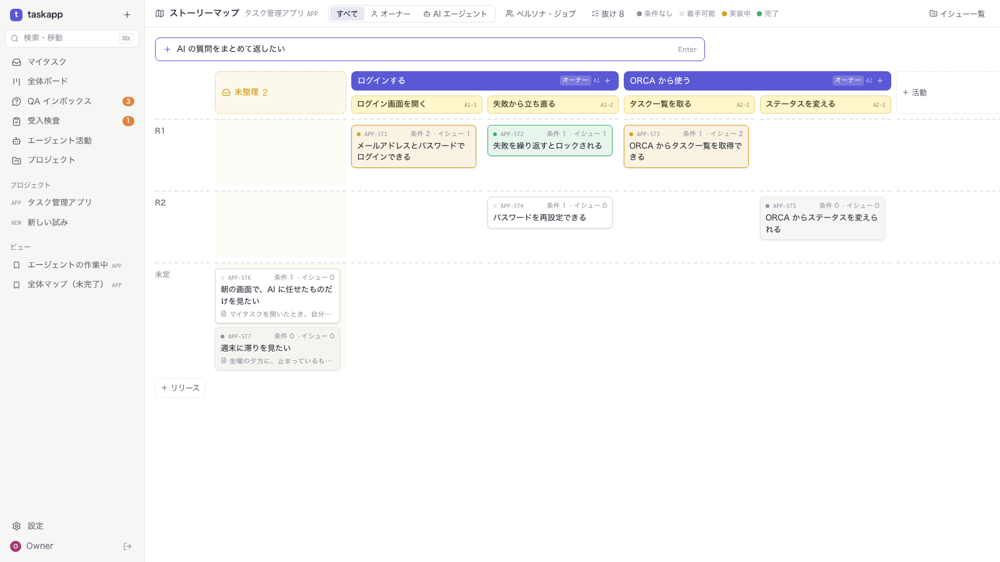
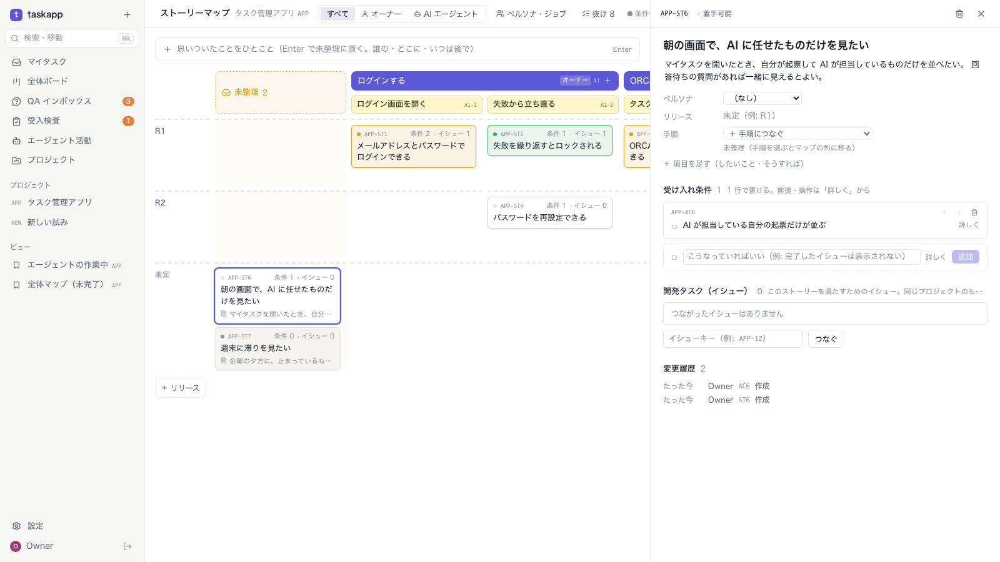
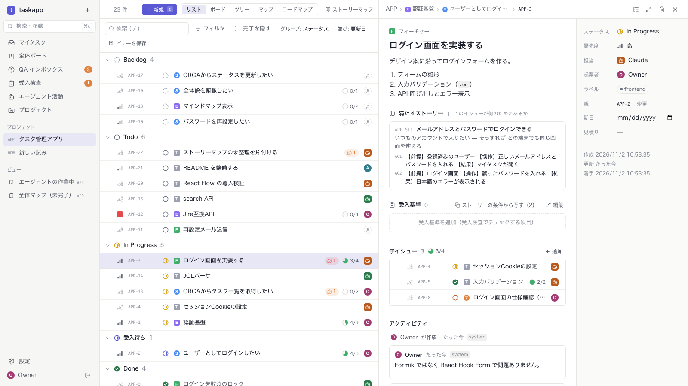

SCREENS · v0.1
画面一覧 · 画面イメージ · 画面遷移
AIエージェントと人間のタスク管理アプリ
2026-10-11
01 · 画面一覧
横断（サイドバー上部）
| ID | 画面 | URL |
|---|---|---|
| S01 | マイタスク | /my |
| S02 | QA インボックス | /inbox/qa |
| S03 | 受入検査 | /inbox/acceptance |
| S04 | エージェント活動 | /agents |
| S05 | プロジェクト一覧 | /projects |
| S14 | 全体ボード | /board |
| S12 | ワークスペース設定 | /settings |
| S13 | ログイン | /login?next=… |
| M01 | 作成モーダル | C キー |
| M02 | コマンドパレット | ⌘K |
プロジェクト配下
| ID | 画面 | URL |
|---|---|---|
| S06 | イシュー一覧 | /p/:key/issues |
| S07 | ロードマップ | /p/:key/issues?view=roadmap |
| S08 | マインドマップ | /p/:key/issues?view=map |
| S09 | イシュー詳細 | /p/:key/issues/:issue |
| S10 | 保存ビュー | /views/:id |
| S11 | プロジェクト設定 | /p/:key/settings |
フィルタ状態は URL の f= に保持し、リロードや共有で再現する
2 / 20
02 · 共通レイアウト
3 / 20
03 · S06 イシュー一覧（リスト）
4 / 20
04 · S06 イシュー一覧（ツリー）
5 / 20
05 · S06 イシュー一覧（ボード）
6 / 20
05 · S14 全体ボード（/board）
◌ Backlog 5
○ 未着手 9
◑ 進行中 8
● 完了 4
⊘ キャンセル 0
★ 注力 2 プロジェクト · 33 件
▾ タスク管理アプリ ★
APP · 21
APP-17 S
ORCAから更新
◌ Backlog
APP-20 T
React Flow 検証
○ Todo
APP-21 T
README 整備
◑ In Progress
APP-2 S
ログインしたい
◑ 受入待ち
APP-9 F
ログインのロック
● Done
▾ 自宅サーバー ★
INFRA · 12
INFRA-9 T
restic の準備
◌ Backlog
INFRA-2 T
認証キーを置く
○ Todo
🌱 その他 1 プロジェクト · 2 件（たたんだ状態）
▸ Security学習 🌱
SEC · 2
★注力 → 通常 → 🌱その他（低優先・お試し）の段。「その他」は最初たたむ。「注力のみ」で絞る。行の印で変える
ステータスはプロジェクトごとに違うので列は共通の分類。ドラッグでその分類の最初のステータスへ
行ごとの件数（内訳つき）。「プロジェクトで分ける」「完了を隠す」。G → B
7 / 20
05 · S15 ストーリーマップ（/p/:key/storymap）

ひとこと入力（案 D）
上の入力に 1 行、Enter で最初の列「未整理」へ。リリースのない行は「未定」
カードの色
灰 = 条件なし、白 = 着手可能、黄 = 実装中、緑 = 完了
その場で追加
＋ 活動・＋ 手順・セルの ＋ ストーリー・＋ リリース。抜けは数だけ（警告の色なし）
左のパネル
ペルソナとジョブの編集（?panel=true）。ペルソナが 0 件なら絞り込みは出ない
8 / 20
05 · S16 ストーリー詳細 と S09 の変更


左: S16（S15 のサイドピーク。タイトルの下に本文、受け入れ条件は 1 行で「詳しく」で前提・操作、したいこと・そうすれば は「項目を足す」で。イシューのつなぎ外し、変更履歴）。右: S09 イシュー詳細の「満たすストーリー」（本文つき）と、受入基準の「ストーリーの条件から写す」
9 / 20
06 · S09 イシュー詳細
10 / 20
07 · S02 QA インボックス
11 / 20
08 · S03 受入検査
12 / 20
◎ APP
🟪 認証基盤 3/5
🟪 Jira互換API 1/4
🟪 マップ ▸5
📘 ログインしたい ●
📘 パスワード再設定
📘 ORCAから一覧 ◔
📘 ORCAから更新
📗 ログイン画面 🤖
📗 ロック機能
▫ JQLパーサ 🤖 ◔
▫ search API
サイドピーク
ノードをクリックすると詳細（S09）を表示
ミニマップ · ⤢ 全体表示 · ⤓ PNG
09 · S08 マインドマップ
13 / 20
10 · S04 エージェント活動
14 / 20
11 · S12 設定
15 / 20
11 · S12 設定 › 利用状況と上限
イシュー（全体）
7,400 / 10,000
74%
性能を確かめた規模（一覧・フィルタ 0.3 秒以内）
全体ボード・一覧に一度に出せる数
7,400 / 2,000
370%
超えると先頭 2,000 件だけ。画面の上にお知らせ。完了を隠す・フィルタで絞る
最大のプロジェクト（APP）
380 / 1,000
38%
マインドマップの操作を確かめた規模
ディスク
28 GB / 500 GB
5.6%
taskapp のデータ 70 MB（DB 7 MB、バックアップ 63 MB）
70% で黄色、90% で赤。超えても止まらないが、遅くなる・出ないイシューが出る
GET /api/v1/capacity（オーナーのみ）。上限の数字は画面側に持つ
1 万件で DB 約 9 MB、メモリ約 60 MB、2,000 件の読み込み 0.07 秒
16 / 20
12 · S13 ログイン
ttaskapp にログイン
ユーザー名
alice
パスワード
••••••••••
☐ ログインしたままにする（30 日）
ログイン
このPCのオーナーとして入る
未ログインで開くとここへ（/login?next=元の画面）。ログインすると元の画面に戻る
「このPCのオーナーとして入る」はこの PC から開いたときだけ。ログアウト後は自動で入らない
スマホ幅でも崩れない。「ログインしたままにする」で 30 日。再起動（デプロイ）ではログアウトしない
17 / 20
グローバル（サイドバー）
プロジェクト配下（タブで相互に移動）
S01 マイタスク
S02 QA インボックス
S03 受入検査
S04 エージェント活動
S05 プロジェクト一覧
S12 設定
S06 イシュー一覧
S07 ロードマップ
S08 マインドマップ
S10 保存ビュー
S11 プロジェクト設定
S09 イシュー詳細
サイドピーク / 全画面
M02 コマンドパレット ⌘K
M01 作成モーダル（C）
子を追加
プロジェクトを選択
S09 → S09: 親・子リンク
ほかの端末から・ログアウト後は S13 ログイン → ログインすると元の画面へ
13 · 画面遷移
18 / 20
Backlog
Todo
In Progress
In Review
受入待ち
Done
優先度・担当
着手
完了報告
受入依頼
合格
QA 待ち（バッジ）
ブロッキング QA 起票 ⇄ 人間が回答
タスクは直接完了
レビュー指摘
差し戻し（S03）
14 · 業務フロー
19 / 20
15 · UI 共通仕様
ショートカット
| キー | 操作 |
|---|---|
| C | イシュー作成 |
| / | フィルタ |
| ⌘K | コマンドパレット |
| J / K | 上下移動 |
| S / A | ステータス / 担当 |
| G → M | マイタスク |
| G → Q | QA インボックス |
種別の色
E
エピック
S
ストーリー
F
フィーチャー
T
タスク
Q
QA
エージェントは 🤖、人間は 👤 のアバターで表示
サイドピーク: 一覧上で開き、Esc で閉じる / Enter で全画面
20 / 20